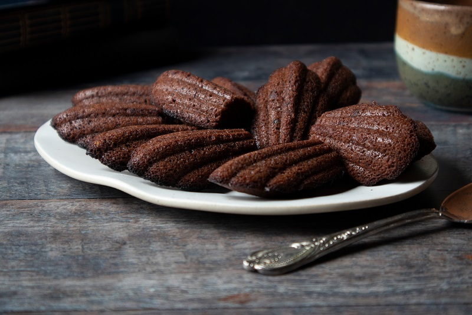
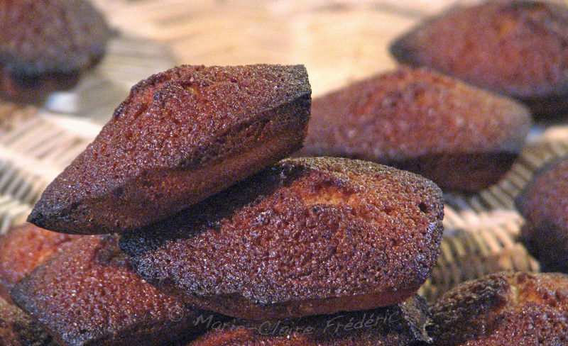
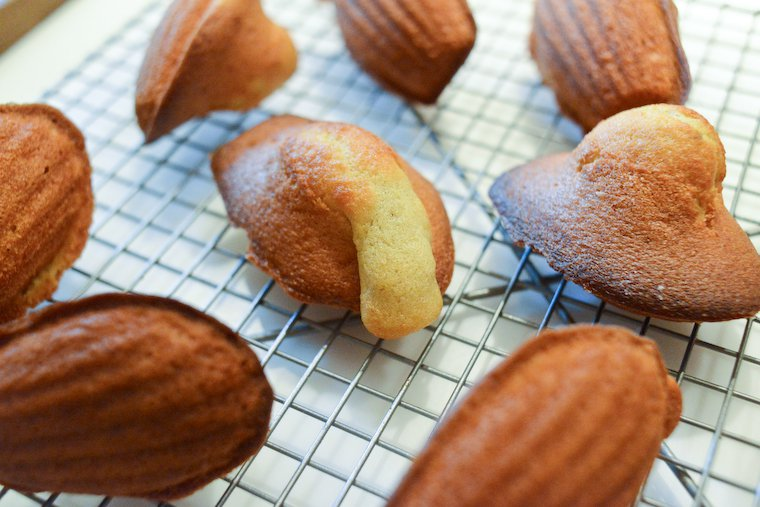
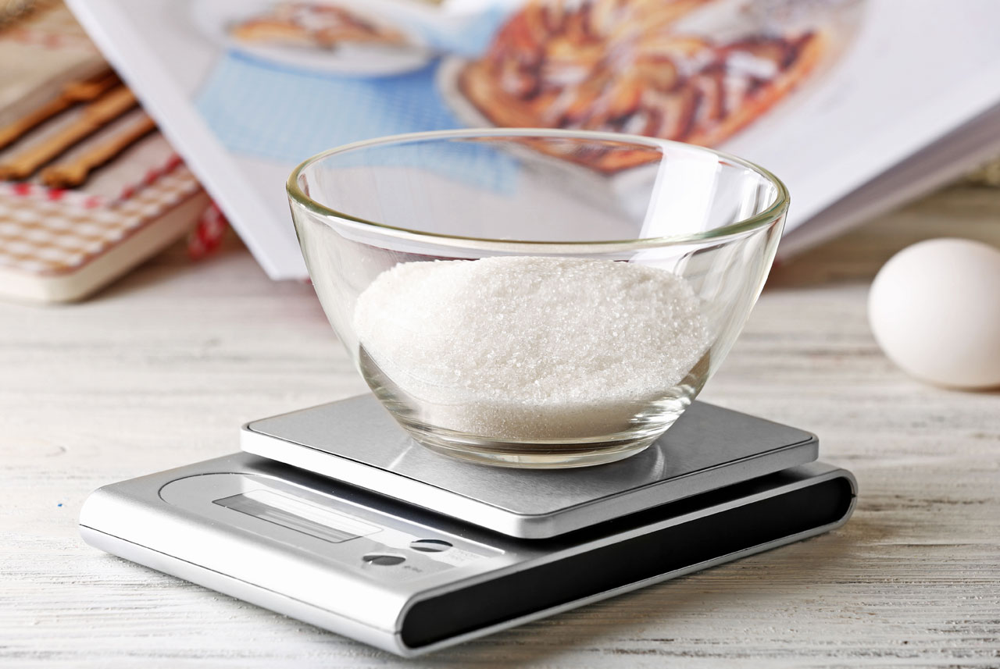
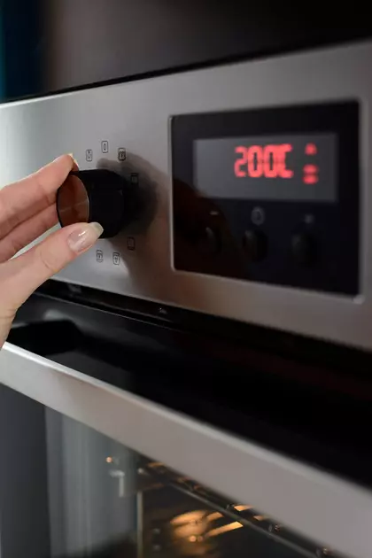
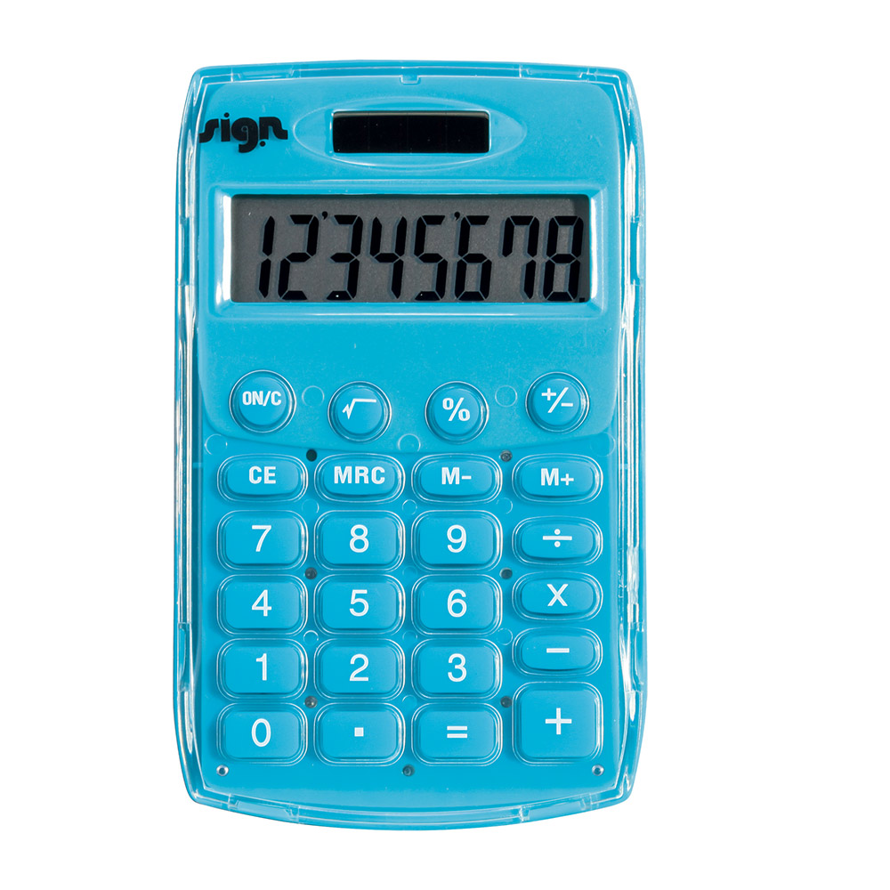
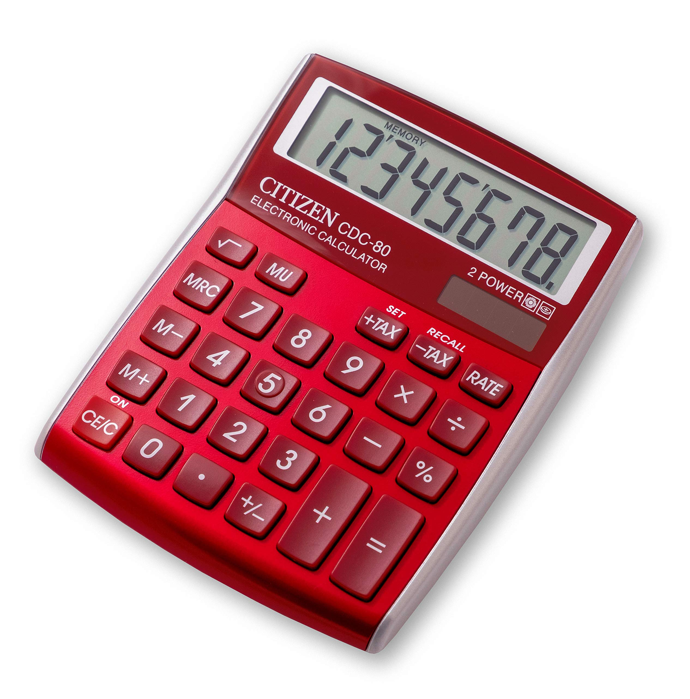
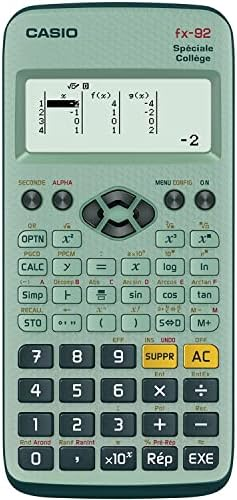

class: center, middle # Programmation orientée objet : # variables et méthodes statiques <img height="200px" src="img/php_logo.png"> --- # Reprenons nos madeleines... Toutes les madeleines, bien qu'elles proviennent du même moule, ne sont pas pareilles... <div style="display: flex; margin-bottom: 20px; flex-direction: row;"> <div style="width: 400px;"> Certaines sont au chocolat... <br>  </div> <div style="width: 400px;"> D'autres sont trop cuites... <br>  </div> </div> <div style="margin-left: auto; margin-right: auto; width: 400px; text-align: center;"> Voire carrément ratées... <br>  </div> --- # Reprenons nos madeleines... ... mais elles partagent tout de même des similarités : * elles contiennent toutes 5 grammes de sucre  --- # Reprenons nos madeleines... ... mais elles partagent tout de même des similarités : * elles doivent être cuites à 200 degrés  --- # Reprenons nos madeleines... ... mais elles partagent tout de même des similarités : * pour cuisiner une madeleine, il faut remplir le moule, cuire puis démouler... et c'est le même principe pour toutes les madeleines ! <img height="400px" src="img/remplir_moule.jpg"> --- # Variables statiques Lorsque des valeurs de propriétés sont communes à tous les objets d'une même classe, on utilise des **variables statiques**. Contrairement à une variable d'instance, une variable statique n'est pas propre à un objet, mais à une classe (et donc à tous les objets de cette classe). La déclaration d'une variable statique se fait en rajoutant le mot-clé `static`: ```php private static $températureCuissonParDéfaut = 200; ``` --- # Méthodes statiques Lorsque des méthodes sont communes à tous les objets d'une même classe, on utilise des **méthodes statiques**. Tout comme une variable statique, une méthode statique n'est pas propre à un objet, mais à une classe. La déclaration d'une méthode statique se fait en rajoutant le mot-clé `static`. --- # Méthodes statiques Exemple : on souhaite créer plusieurs calculatrices de différentes couleurs    -- * `couleur` est une **variable d'instance non statique** car chaque calculatrice possède sa propre couleur * `pi` est une **variable d'instance statique** car le nombre PI est commun à toutes les calculatrices * `additionner` est une **méthode statique** car toutes les calculatrices additionnent de la même manière * `setCouleur` est une **méthode non statique** car elle consiste à modifier la couleur d'un objet en particulier --- # Méthodes statiques ```php class Calculatrice { private $couleur; private static $pi = 3.14; public function __construct($c){ $this->couleur = $c } public static function additionner($a, $b) { return $a + $b; } public function setCouleur($nouvelleCouleur) { $this->couleur = $nouvelleCouleur; } public function getCouleur() { return $this->couleur; } } ``` --- # Méthodes statiques ```php $calculetteRouge = new Calculatrice("rouge"); $res = Calculatrice::additionner(5,7); $calculetteRouge->setCouleur("bleue"); ``` --- ## Coding time ! ### Todo : * Exercice 1 (Série 6) * Exercice 2 (Série 6) <img height="400px" src="img/fast.gif">